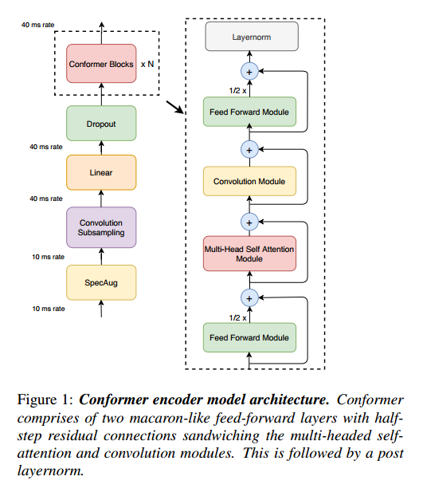
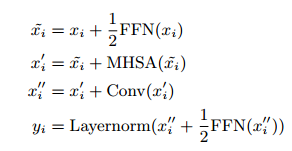
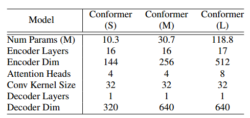
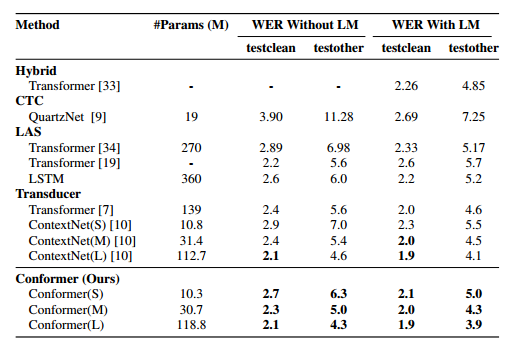
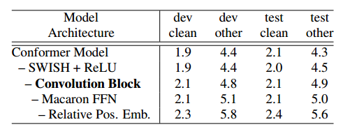
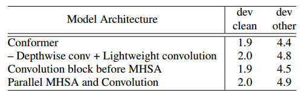
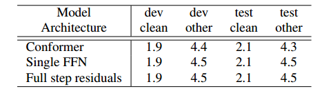
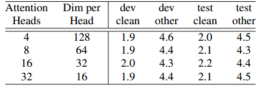
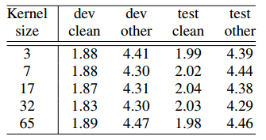

1-Conformer-Convolution-augmented Transformer for Speech Recognition¶
论文链接：https://arxiv.org/abs/2005.08100
Transformer 模型善于捕捉基于内容文本的全局交互，CNN 可以有效利用局部特征，本文将 CNN 和 Transformer 结合，以 parameter-efficient 的方式对音频序列的局部和全局依赖进行建模。本文提出一种用于语音识别的卷积增强 Transformer，名为 Conformer，效果显著优于基于 Transformer 和 CNN 的模型，实现了最先进的精度。
1、引言¶
具有自注意力或卷积的模型各自有局限性。Transformer 擅长对长范围全局上下文进行建模，但提取细粒度的局部特征的能力较弱；CNN 则利用局部信息，在局部窗上学习共享基于位置的 kernels，该内核保持平移方差，能够捕获边缘和形状特征。
本文研究如何在 ASR 模型中将卷积和自注意力相结合，实现自注意力全局交互，卷积有效捕获基于相对偏移的局部相关性。图 1 引入了自注意力和卷积组合，夹在一对前馈网络之间，提出的模型名为 Conformer：

2、Conformer编码器¶
Conformer 块由四个模块堆叠而成，即前馈模块、自注意力模块、卷积模块和第二个前馈模块。
对于多头自注意力模块，集成了 Transformer 和相对正弦位置编码，允许自注意力模块在不同的输入长度上能更好地泛化，所得到的编码器对语音长度变化具有更好的鲁棒性。使用具有 dropout 的 prenorm 残差单元，有助于训练和规范更深层次的模型。Wenet 多头注意力网络模块架构：
(self_attn): RelPositionMultiHeadedAttention(
(linear_q): Linear(in_features=256, out_features=256, bias=True)
(linear_k): Linear(in_features=256, out_features=256, bias=True)
(linear_v): Linear(in_features=256, out_features=256, bias=True)
(linear_out): Linear(in_features=256, out_features=256, bias=True)
(dropout): Dropout(p=0.0, inplace=False)
(linear_pos): Linear(in_features=256, out_features=256, bias=False)
)
对于卷积模块，从门控机制开始——一个逐点卷积核门控线性单元(GLU)，最后是单个一维深度卷积，Batchnorm 部署在卷积之后，以帮助训练更深度的模型。Wenet 卷积网络模块架构(和文中所提出的架构有些许不同)：
(conv_module): ConvolutionModule(
(pointwise_conv1): Conv1d(256, 512, kernel_size=(1,), stride=(1,))
(depthwise_conv): Conv1d(256, 256, kernel_size=(15,), stride=(1,), groups=256)
(norm): LayerNorm((256,), eps=1e-05, elementwise_affine=True)
(pointwise_conv2): Conv1d(256, 256, kernel_size=(1,), stride=(1,))
(activation): SiLU()
)
对于前馈模块，由两个线性变换和其中间的非线性激活组成，在前馈层添加了残差连接，然后进行层归一化。Wenet 前馈模块网络架构：
(feed_forward): PositionwiseFeedForward(
(w_1): Linear(in_features=256, out_features=2048, bias=True)
(activation): SiLU()
(dropout): Dropout(p=0.1, inplace=False)
(w_2): Linear(in_features=2048, out_features=256, bias=True)
)
本文提出的 Conformer 包含两个前馈模块（这和 Wenet 相同），将多头自注意力模块和卷积模块夹在中间（Wenet 是将前馈模块夹在中间），该结构的灵感来源于 Macaron Net，该结构建议将 Transformer 块中的原始前馈层替换为两个半步前馈层，一个在注意力层之前，一个在注意力层之后。对于 Conformer 块的输入 \(x_i\)，其输出 \(y_i\) 的数学表达为：

3、实验¶
在 LibriSpeech 数据集上评估模型，该数据集由 970 小时标记语音和 800M 单词标记纯文本组成，用于构建 LM 模型。通过对网络深度、模型维度和注意力头数量的不同组合，确定了三个不同大小约束下的三个模型，即 10M 参数的小型模型，30M 参数的中型模型和 118M 参数的大型模型。所有模型采用单个 LSTM 层解码器。表 1 描述了体系结构超参数：

对于 LM 模型，在 LibriSpeech 语料库上训练宽度为 4096 的 3层 LSTM 语言模型，添加了 LibriSpeech960h 转录文本，构建了 1k WPM 标记。LM 在验证集转录文本上具有词水平困惑度为 63.9。用于浅融合的 LM 权重 \(\lambda\) 通过网格搜索在验证集上调整，模型使用 Lingovo 工具包实现。
3.1 实验结果¶
表 2 比较了我们的模型在 LibriSpeech 测试的结果，先进模型包括 ContextNet、Transformer transducer和 QuartzNet。

3.2 消融实验¶
Conformer vs Transformer¶
Conformer 块不同于 Transformer 块在于其包含了卷积块，在块周围有一对 Macaron-style 的 FFN。表 3 显示更改 Conformer 块的影响，评估结果没有外部 LM 模型的影响。
使用 ReLu 代替 SWISH，使用 SWISH 可以加快收敛速度
移除卷积块
用单个 FFN 替换 Macaron FFN
使用 vanilla 自注意力层取代相对位置编码自注意力层

卷积和 Transformer 结合方式¶
采用轻量级卷积替换深度卷积，性能会下降。表 4 总结了将卷积模块放在多头自注意力模块之后的优点：
Conformer 架构
使用轻量卷积代替深度卷积
卷积在 MHSA 的前面
卷积和 MHSA 并行，输出采用级联

Macaron 前馈模块¶
表 5 显示了将 Conformer 块使用单个 FFN 或全阶残差的影响：
Conformer
单个 FFN 取代 Macaron FFN 对
全阶残差取代单阶残差

注意力头数目¶
每个注意力头都会关注输入的不同部分，表 6 显示了注意力头数目对性能的影响，将注意力头数目提高到 16 可以提高准确性。

卷积核大小¶
表 7 显示了卷积核大小对性能的影响，卷积核大小过大会对性能带来恶化：
